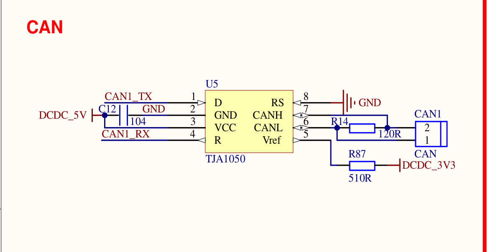
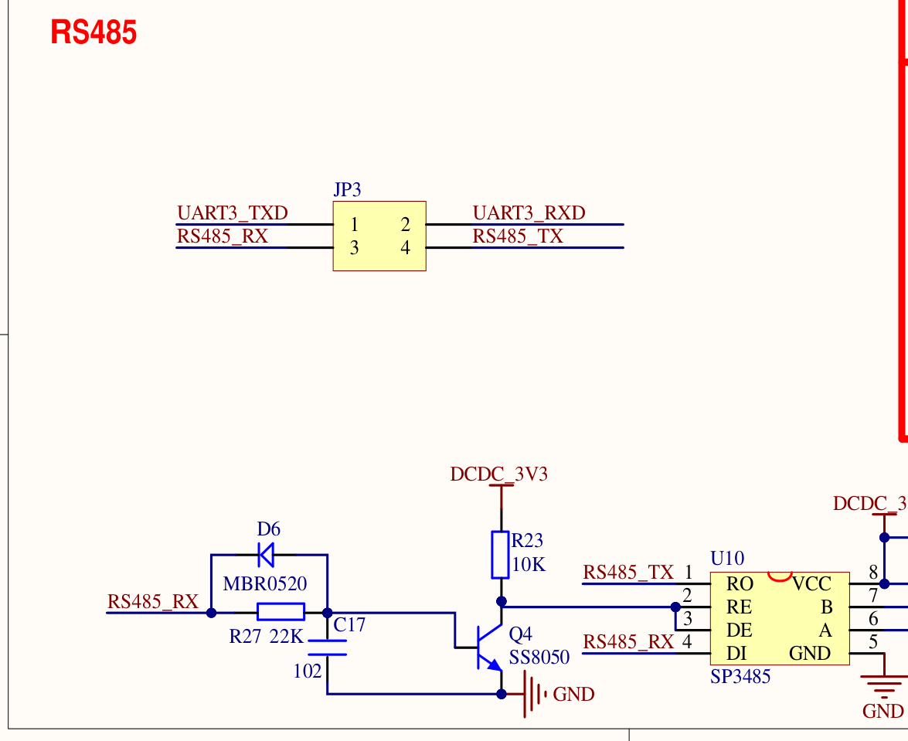

MINI 第 2 页：TF 卡、CAN、RS485 与人机外设
MINI p2（IMX6ULL_MINI_DEVICE.SchDoc）是「外设大杂烩」：左上 TF 卡，左中 CAN，左下 RS485/RS232，中上摄像头排针，中下蜂鸣器与按键，右侧 40pin RGB LCD 与 ATK 模块座。这一页的价值在于四种典型接口电路：卡的、总线的、差分的、人机的——每种都有一套固定的电阻套路。

新窗口打开读完这一章，你应该能
- 说出 TF 卡的 6 根信号与卡检测（CD）的判据，解释 47K 上拉为什么标 NC
- 算出 CAN 终端 120Ω 与总线负载的关系，解释 RS 脚为什么接 510Ω/GND
- 讲清 RS485「自动方向」电路如何用一个三极管省掉 DE 控制脚
- 解释蜂鸣器为什么用 PNP（S8550）而不是 NPN
- 说出 40pin RGB LCD 上三个 SGM3157 的作用
3.11.1TF 卡：六根线 + 一个检测脚
TF（MicroSD）卡座只有一个 8 pin 触点，实际用 6 根信号 + 电源地：
| 卡座脚 | 网络 | 作用 |
|---|---|---|
| DATA2 / CD/DATA3 / CS | USDHC1_DATA2 / DATA3 | 4 位模式的数据 2/3；SPI 模式时复用为 CS |
| CMD/SDI | USDHC1_CMD | 命令与响应（开漏，需上拉） |
| VDD | DCDC_3V3 | 3.3V 供电 |
| CLK/SCK | USDHC1_CLK | 时钟（经 R70 47Ω） |
| VSS | GND | 地 |
| DATA0/SDO、DATA1 | USDHC1_DATA0/1 | 数据 0/1 |
| CD/SW | USDHC1_CD_B | 卡检测，插卡时被卡座弹片拉低 |
图上 R1–R5 = 47K/NC（CMD、DATA0–3 的上拉），R24 = 47K/NC（CD 上拉），全部标 DNP。为什么可以全部不贴？
- SoC 的 USDHC 内部已有可配置上拉（通过寄存器使能），外部 47K 只是备份；
- 贴了会增加插卡瞬间的漏电与上电电流；
- 高频（50MHz）下外部上拉还会加重总线负载。
但注意：如果用的是「只支持 3.3V 的老卡」或长排线，上拉就必须贴，否则会出现「插卡识别不到、偶发 CRC 错」。DNP 不是「永远不贴」，而是「默认不贴、按需贴」。
3.11.2CAN：120Ω 与 510Ω 的分工
CAN 是差分总线，物理层只有两根线 CANH/CANL，速率 125k–1Mbps。图上的两个电阻是重点：
R14 120Ω 跨接在 CANH 与 CANL 之间，是终端电阻。CAN 总线两端各一个 120Ω，并联后总线看到 60Ω——这是 CAN 收发器驱动能力的匹配值。只在一端接 120Ω 或用两个 120Ω 加中间节点，都会造成反射，表现为「短帧能通、长帧出错」。
R87 510Ω 从 Vref（pin5，约 2.5V）引出，作用是给总线一个「隐性电平偏置」。CAN 的显性位是 CANH 高/CANL 低（差分约 2V），隐性位是两者都约 2.5V（差分 0V）。当总线无人驱动时，靠这个偏置保证差分接近 0，接收器判为隐性（逻辑 1），不会误触发。
算一下终端功耗：显性时总线差分 2V 加在 60Ω 上，电流 33mA，功耗 66mW——这也是 CAN 收发器要选 5V 供电（驱动能力强）的原因。本板 TJA1050 的 VCC 接 DCDC_5V，而 TXD/RXD 是 3.3V 逻辑：TJA1050 的 TXD 输入阈值兼容 3.3V，但 RXD 输出是 5V 电平，接到 3.3V 的 SoC 时需要确认 SoC 该脚是否 5V 容忍——这是本板一个必须核对的点（i.MX6ULL 的 UART 脚不是 5V 容忍，所以底板上通常还有分压/电平转换，读图时要一并确认）。
3.11.3RS485：一颗三极管实现「自动方向」

新窗口打开RS485 收发器有 4 个控制脚：RO（接收输出）、DI（发送输入）、DE（发送使能，高有效）、RE#（接收使能，低有效）。正常用法需要一根 GPIO 控制 DE/RE，但本板只用了 UART 的 TX/RX，方向靠硬件自动切换：
- UART_TX 空闲时为高 → 经 R23 10K 送到 Q4 基极（经 R27 22K 分压）→ Q4 截止 → DE 被 R? 下拉为低 → 发送关闭、接收打开；
- UART_TX 开始发送（先出起始位低电平）→ Q4 导通 → DE 拉高、RE 拉高 → 切换到发送；
- 发送结束、TX 回高 → Q4 截止 → 自动切回接收。
这套电路的代价是第一个起始位可能被削顶（方向切换有几微秒延迟），所以波特率不能太高（一般 ≤115200），且要求 UART 空闲电平为高（标准 UART 正是如此）。
R25/R26 360Ω 串在 A/B 上，是限流/保护：总线短路或接错时限制电流，配合 D6 MBR0520 肖特基把 A/B 钳在安全范围。RS1 120Ω 是终端电阻（与 CAN 同理，RS485 也需要两端 120Ω）。
3.11.4蜂鸣器：为什么用 PNP
蜂鸣器区：Q1 S8550（PNP）、R21 1K 基极电阻、BEEP1 有源蜂鸣器。接法是「发射极接 3.3V、集电极接蜂鸣器、基极经 1K 接 GPIO」。
- GPIO 低 → Q1 导通 → 蜂鸣器响；GPIO 高 → 截止 → 不响。
- 用 PNP 的好处：蜂鸣器接在集电极（低边），发射极固定 3.3V，基极电流由 GPIO 灌入（低电平有效），不需要 GPIO 输出高电平去驱动；对 3.3V MCU 来说，低电平灌电流能力通常更强。
- R21 1K 限制基极电流：Ib=(3.3−0.7)/1K≈2.6mA，hFE≥100 时可驱动 260mA，蜂鸣器（约 30mA）绰绰有余。
若换成 NPN（S8050）做低边，需要 GPIO 输出高电平，且蜂鸣器接在集电极与 VCC 之间，逻辑反相——两种都能用，但PNP 的「低电平有效」更符合「复位期间 GPIO 为低 → 蜂鸣器误响」的风险，所以很多板子反而选 NPN。本板选 PNP，是因为它的 GPIO 默认状态可配置，且蜂鸣器只在明确拉低时才响。
3.11.540pin RGB LCD 与三个 SGM3157
右侧 J1（40pin，2×20） 是 RGB LCD 接口，包含 R0–R7、G0–G7、B0–B7 共 24 根数据、DE/PCLK/HSYNC/VSYNC、BLT_PWM（背光）、RESET，以及 3.3V/5V/GND。
旁边三颗 SGM3157（U1/U2/U3） 是单刀双掷模拟开关，把 LCD_DATA7/15/23 切换成 LCD_DATA7S/15S/23S（图上还有 BOOT_DATA7 的标注）。它们由 SGM_CTRL 统一控制：
- 一路用于「16 位/24 位屏」切换：低 16 位屏只需要 DATA0–15，高位可挪作他用；
- 另一路用于「启动配置」与「LCD 数据」的隔离（BOOT_DATA7 与 LCD_DATA6 共球）；
- R9/R18/R19/R20 10K 是控制脚与开关脚的默认电平，R10/R11/R15–R17 是 0Ω/NC 跳线。
为什么用模拟开关而不是直接并联？因为两个信号源不能同时驱动一根线，必须有一个「断开」的中间态。SGM3157 的导通电阻约 5Ω，对 LCD 的 30MHz 信号影响可接受。
3.11.6ATK MODULE 与摄像头排针
U9 ATK MODULE 是 6 pin 模块座（VCC/GND/LED/KEY/RXD/TXD），用来插 ESP8266/ESP32 这类模块，走 UART3。旁边 C14 104 去耦。P1（Header 9X2） 是摄像头排针，走 CSI 的 8 根数据 + MCLK/PIXCLK/VSYNC/HSYNC + I2C2（配置传感器）+ RESET/PWDN。
摄像头区还有 R7 10K 与 R13 10K：前者是 I2C2 的本地加固上拉（与 p1 的 4.7K 并联会变成约 3.2K，加快上升沿），后者是 PWDN/RESET 的默认电平。这类「同一总线两处上拉」在底板上很常见，读图时要算并联值，别以为还是 4.7K。